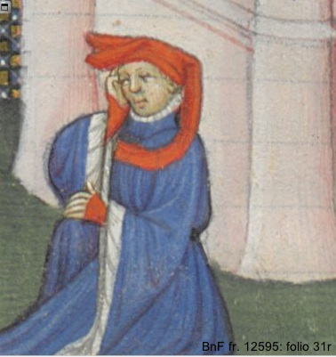
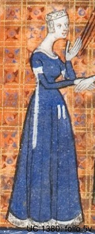
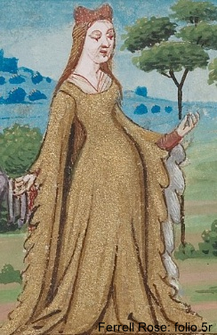
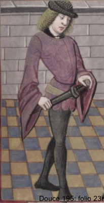
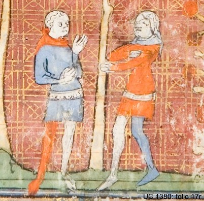
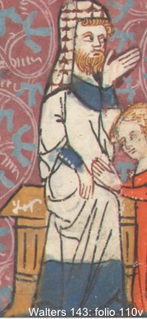
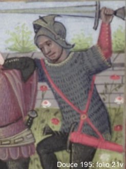

Illustration Keyword Glossary and Index
The following is an illustrated glossary of various terms used as keywords
for the manuscript illustrations. These terms are taken from François
Piponnier and Perinne Mane's publication Se vêtir au Moyen Age,
translated by Caroline Beamish as Dress in the Middle Ages (New
Haven and London: Yale University Press, 1997), and Margaret Scott's
Medieval Dress & Fashion (London: The British Library:
2007). This glossary is by no means exhaustive and the project welcomes contributions and corrections.
Costume and Accessories
- Almuce
- headdress in the shape of a long hood, lined with fur; worn
originally by the laity of both sexes and later exclusively by
clerics. French: Aumusse
- Bourrelet
- padded roll or circlet worn by children to protect their heads, or,
in the 15th century, by men to give volume to their hoods. Also the
padded roll added to women's headdresses. French: Bourrelet
- Chaperon
- hood, originally covering the head and shoulders. A hole was cut in
the fabric to frame the face. The point of the hood was often very
long. In the 15th century changing masculine fashion dictated that
the head should go right through the visor and the neckpiece be
raised to form a crest on the head, often on a padded ring
(bourrelet). The point of the hood was then worn round the neck or
round the head. French: Chaperon

- Chasuble
- ecclesiastical vestment, sleeveless and circular in cut. Worn by
priests over an alb and by bishops over a dalmatic, the chasuble had
a hole in the center for the head to pass through. French: Chasuble
- Cornettes
- tails on sleeves in 14th century and on hoods in 14th and 15th
centuries. French: Cornettes

- Cote hardie
- literally "daring cote." Worn in 14th and early 15th centuries. Women's
versions were tight-fitting outer garments. French: Cote Hardie
- Crozier
- a staff with a curved, circular head carried by bishops. French: Crosse
- Dagging
- slashed edges, cut in various patterns, on clothing in the 14th and
early 15th centuries.French: Franges

- Doublet
- item of male clothing, fitted and covering the upper part of the
body and hips; originally was made of several thicknesses of cloth
padded with silk or cotton and quilted. It began as an undergarment
but gradually came to be worn on its own, with hose. French: Doublet

- Houce
- long outer garment with cape-sleeves to elbow level and "tongues" (of
fur) on chest. Worn late 13th to late 14th centuries. French: Housse
- Houppelande
- sleeved, front-closing outer garment worn by both sexes, introduced
c.1360 and disappearing from fashion around 1430.
Always full-length on women; sometimes short on men. Characterized
c.1400 and later by huge sleeves. French: Houppelande
- Mantle
- loose outer garment or cloak cut in the round, open down the front
and fastened either on the shoulder or in front; for men or
women. French: Manteau
- Mi-parti
- Dividing of clothes vertically into two different colors and/or
patterns. Fashionable at end of 12th century and again from
1320s. French: Mi-parti

- Surcot(e) ouverte
- woman's sleeveless outer garment, with armholes that deepened
towards the hips in the middle of the 14th century. Retained as a symbol of rank for aristocratic women into 16th century. French: Surcot(e) ouvert(e)
- Surplice
- fine linen tunic worn over ordinary clothes by members of the clergy
in church, when not officiating at a service, or during processions
outside. French: Surplis

Armor and Weapons
- Camail or aventail
- chain mail covering neck and shoulders. French: Camail
- Crossbow
- a bow fixed horizontally to one end of a wooden stock. French: Arbalète
- Haubergeon or hauberk
- piece of armor made of fine mail that originally covered the head,
neck and shoulders. French: Haubert

- Mail
- originally a metal plate fixed on to a soldier's clothing to
strengthen it. Chain mail consisted of interlocking metal rings
which produced a much more flexible kind of armor. French: Maille
- Plates
- pieces of iron, often tempered, cut into different shapes by
armorers to reinforce the different garments worn for battle. French: Plates
[back to top]
Index
Below is an index of illustration keywords. Click on the letters to see lists of words taken from our tagging of images.
A
B
C
D
E
F
G
H
I
J
K
L
M
N
O
P
Q
R
S
T
U
V
W
X
Y
Z
Almuce,
Altar (Altar cloth),
Altarpiece
Andirons,
Angels,
Animals
Anvil,
Apple, Apples,
Apron,
Arabesque, Arabesques,
Arcade windows,
Arched (Arched doorway, Arched entrance, Arched opening, Arched wooden door),
Archer,
Arches,
Architectural frame,
Arm, Arms,
Armchair,
Armor (Armor for lower arms, Armored horses),
Arrow (Arrow slits),
Attack,
Axes,
Background,
Bagpipe,
Ball,
Band, Bands,
Banner,
Bar,
Bare legs,
Baron, Barons,
Barred (Barred window),
Barrels,
Bascinets,
Bed (Bed caps, Bed furnishings),
Bedchamber,
Bedclothes,
Bedroll
Belt (Belted tunic, Belted tunics),
Bench, Benches,
Bird, Birds,
Birdcage,
Bit, Bits,
Blindfold,
Boar,
Boat, Boats (Boat builders),
Body of water,
Bonnet,
Book,
Bookshelf,
Bookstand,
Boots,
Border,
Bourrelet,
Bow,
Bowl,
Box,
Bridge,
Bridle (Bridled and saddled horse),
Brim (Brimmed hat),
Brush,
Bucket,
Buckle,
Buckler,
Building,
Burning,
Bushes,
Buskins,
Bust portraits,
Butterflies,
Butterfly henin,
Buttons (Buttoned garment, Buttoned sleeves, Buttoned tunic),
Camail,
Cane,
Canopy,
Cap,
Carriage,
Carved (Carved bench, Carved decoration, Carved fountain),
Carving (Carving bench, Carving instrument, Carving tools),
Castle (Castle builders, Castle Guards),
Cat,
Central spire,
Chain mail,
Chain,
Chair,
Chalice,
Chaperon, Chaperons,
Chariot,
Chasuble,
Chausses,
Checker,
Chest (Chest armor, Chest with a lock),
Child,
Chimney,
Chisel, Chisels,
Circular garden wall,
Circular shields,
Circular table,
Cloth (Cloth sack),
Clothing,
Clouds,
Club,
Coins,
Collar,
Column, Columns,
Comb,
Compass,
Cornettes,
Corpse, Corpses,
Costumes,
Cote hardie, Cote hardies,
Couple,
Cover, Covered,
Cowl, Cowls,
Cows,
Crane,
Crenellated walls,
Crib,
Cross,
Crossbows,
Crowd,
Crown (Crown of flowers, Crowns of flowers, Crown of leaves),
Crozier,
Crucifix,
Crucifixion,
Crutch, Crutches,
Cuffs,
Cup, Cups,
Cupboard,
Curtain,
Curved blade,
Dagges,
Dagging,
Dalmatic,
Dancers,
Dancing,
Deer,
Desk,
Devotional image,
Diaper,
Dirt,
Distaff,
Distance,
Divider,
Dog, Dogs,
Dome (Domed roof),
Door,
Doorknocker,
Doorway,
Doublet, Doublets,
Doves,
Dragon,
Drapery,
Drawbridge,
Drawn,
Dream,
Drop spindle,
Elm tree,
Emblem,
Embossing,
Embroidered,
Ewer, Ewers,
Execution,
Executioner, Executioners,
Farmers,
Feather, Feathers (Feathered bonnet),
Female figure, Female figures,
Fence,
Ferret,
Fig tree,
Figures,
File, Files,
Fire,
Fireplace,
Fish,
Flame, Flames,
Flaming torch,
Fleur-de-lys,
Floral pattern,
Flower (Flowered, Flower wreath, Flowering bushes, Flowering hedge, Flowering hedges),
Foliate,
Food,
Forest,
Forge,
Fountain,
Frame,
French gown,
Fruit, Fruits
Fur collar,
Fur trim (Fur-trimmed, Fur-trimmed gown, Fur-trimmed robe),
Gallery,
Gallows,
Garden,
Garment, Garments,
Gate,
Genius,
Geometric,
Girdle,
Glass,
Gloves,
Gold (Gold border, Gold coins, Gold containers, Gold headpiece, Gold objects, Golden fleece),
Gown, Gowns,
Grass (Grass covered bench, Grass ground, Grassy mound),
Ground,
Halberds,
Half plate armor,
Half-timbered (Half-timbered building),
Hammer,
Hand,
Hanging (Hanging scaffold),
Hare, Hares,
Harp,
Hat,
Haubergeon,
Hauberk, Hauberks,
Head,
Headcloths,
Headdress,
Headpiece,
Heap of coins,
Heart,
Hedge, Hedges,
Hellmouth,
Helmet, Helmets (Helmeted head),
Hem,
Henin
Hill, Hills,
Historiated,
Hod,
Hollow,
Hood, Hoods (Hooded garment, Hooded outer garment, Hooded robe, Hooded tunic),
Horn,
Horse, Horses,
Hose,
Houce,
Houpellande,
Hunt (Hunting, Hunting horn),
Husband,
Hybrid creature, Hybrid creatures,
Illustration,
Inkpot,
Interior,
Ivy (Ivy leaves),
Jeweled (Jeweled crown),
Key, Keys,
King,
Kite,
Knight, Knights,
Knives,
Knocker,
Knotted (Knotted cloth, Knotted rope belt),
Labels,
Lace,
Lacing,
Ladder,
Lamb,
Lamp,
Lance, Lances,
Landscape,
Lattice (Lattice arch, Lattice fence, Lattice gate),
Leaf (Leaf crowns, Leafy tree, Leafy trees),
Lectern,
Left,
Level,
Lion, Lions (Lion-headed spouts),
Liripipe (Liripipe hoods),
Lock,
Loincloth,
Low-cut gown,
Lozenge, Lozenges,
Mail,
Male figure, Male figures,
Mantle,
Margin,
Message,
Metal clasps,
Mi-parti (Mi-parti hose),
Mirror, Mirrors,
Mitre,
Moat,
Money,
Monk, Monks,
Moon,
Mortar,
Mote,
Motto,
Mound,
Mouse,
Multi-color,
Musical instruments,
Musicians,
Necklace,
Needle,
Net of iron,
Niche, Niches,
Nightcap,
Nude (Nude figure),
Nun (Nun’s veil),
Oars,
Open book,
Orb,
Ornament,
Outer garment,
Oxen,
Painting,
Palette,
Paned (Paned sleeves, Paned window),
Panelled walls,
Parchment,
Park,
Path,
Pattern (Patterned, Patterned wall, Quatrefoil pattern),
Pears,
Pebble ground,
Pedestal,
Pen, Pens,
Pennant, Pennants,
Personifications,
Picket fence,
Piece of cloth, Pieces of cloth,
Pile of coins,
Pilgrim, Pilgrims,
Pine tree,
Pipe,
Plaid,
Plants,
Plate armor,
Platform,
Platter,
Plow,
Pole,
Portrait,
Pot,
Pouch,
Profile,
Psaltery,
Pulpit,
Purple,
Purse, Purses,
Putti,
Pyre,
Quatrefoil (Quatrefoil pattern),
Quiver,
Rabbit,
Rags,
Railing,
Reflection,
Reins,
Reversed,
Riding boots,
River,
Robe,
Rocky (Rocky ground, Rocky hill, Rocky Island, Rocky peak, Rocky peaks),
Rod, Rods,
Roll of grass,
Roof, Roofs (Roofed entrance),
Rooster,
Rope,
Rosary beads,
Rose, Roses (Rose bushes),
Round (Round building, Round tower, Round tub),
Roundel,
Row (Row of windows),
Rowboat,
Sack,
Saddle (Saddled horse),
Sailboat, Sailboats,
Sailors,
Sails,
Salamander,
Sandal,
Sash,
Scaffold,
Scarf,
Sceptre,
Scribe,
Scrip,
Scroll (Scroll of parchment, Trompe l'oeil scroll),
Sculpted figures,
Sculpture,
Scythe,
Seed, Seeds,
Severed head,
Shears,
Sheath,
Sheep,
Shelf,
Shield, Shields,
Shoes,
Short tunic, Short tunics,
Shoulder sack,
Shovel,
Shrubs,
Shutters,
Skins,
Sky,
Sleeve, Sleeves,
Sleeveless (Sleeveless outer garment),
Slits,
Small knife,
Soldiers,
Spear, Spears,
Spinning wheel,
Spires (Spires of buildings),
Spout,
Spring,
Square (Square garden, Square neckline),
Staff, Staffs,
Stags,
Stairs,
Stand,
Standard, Standards,
Stars (Star pattern, Starry sky),
Statue, Statues,
Steps,
Stick,
Stirrups,
Stocking, Stockings,
Stone, Stones (Stone altar, Stone block, Stone blocks, Stone building, Stone buildings, Stone Wall, Stony ground),
Straight,
Stream,
Streamers,
Striped,
Sun,
Surcoat, Surcoats, Surcote ouvert, Surcote ouverte,
Surplice,
Swans,
Sword, Swords,
Table,
Tablecloth,
Tabor,
Tavern,
Temple,
Text,
Thatched,
Thread,
Throne,
Tiled (Tiled floor, Tiled roof),
Tilled field,
Tongue,
Tonsure,
Top,
Torch,
Torn (Torn garment, Torn hem),
Towel,
Tower,
Trailing,
Tree, Trees (Elm tree, Fig tree, Pine tree, Leafy tree),
Trellis,
Trellised hedge,
Trompe l'oeil scroll,
Trowel,
Trumpet,
Tub,
Tunic,
Tunics,
Unicorn,
Veil, Veils,
Vines,
Viol,
Visors (Visored helmets),
Waist,
Walking stick,
Wall, Walls (Walled garden, Walls of garden),
Warhammer,
Warrens,
Washstand,
Water container,
Water,
Wattle fence,
Wheel (Wheeled chariot, Wheeled covered carriage),
Wife,
Wildflowers,
Wimple,
Wind instrument,
Window, Windows (Window arcade),
Wine,
Winged (Winged dragon, Winged stags),
Wings,
Women,
Wood for boat,
Wreath (Wreath of flowers),
Writing table,